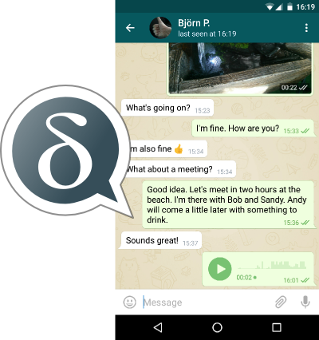

Why Delta Chat? Your Advantages.
Delta Chat is a project that aims to create a messaging app that is completely compatible to the existing email-infrastructure.

So, with Delta Chat you get the ease of well-known messengers with the reach of email. Moreover, you're independent from other companies or services - as your data are not related to Delta Chat, you won't even add new dependencies here.
Some features at a glance
- Fast by the use of Push-IMAP
- Largest userbase - receivers not using Delta Chat can be reached as well
- Compatible - not only to itself
- Elegant and simple user interface
- Distributed system
- No Spam - only messages of known users are shown by default
- Reliable - safe for professional use
- Secure - You can lock the app with password
- Trustworthy - can even be used for business messages
- fully open source and standards based